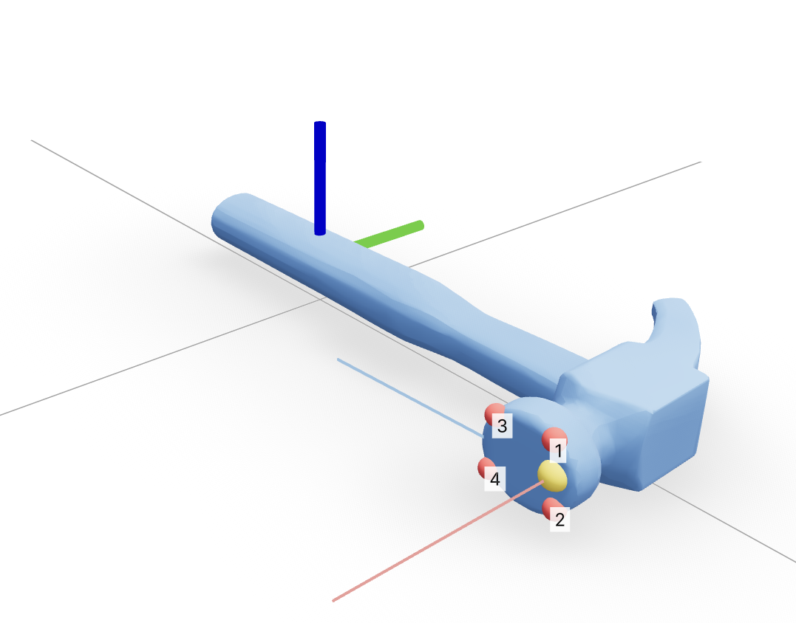
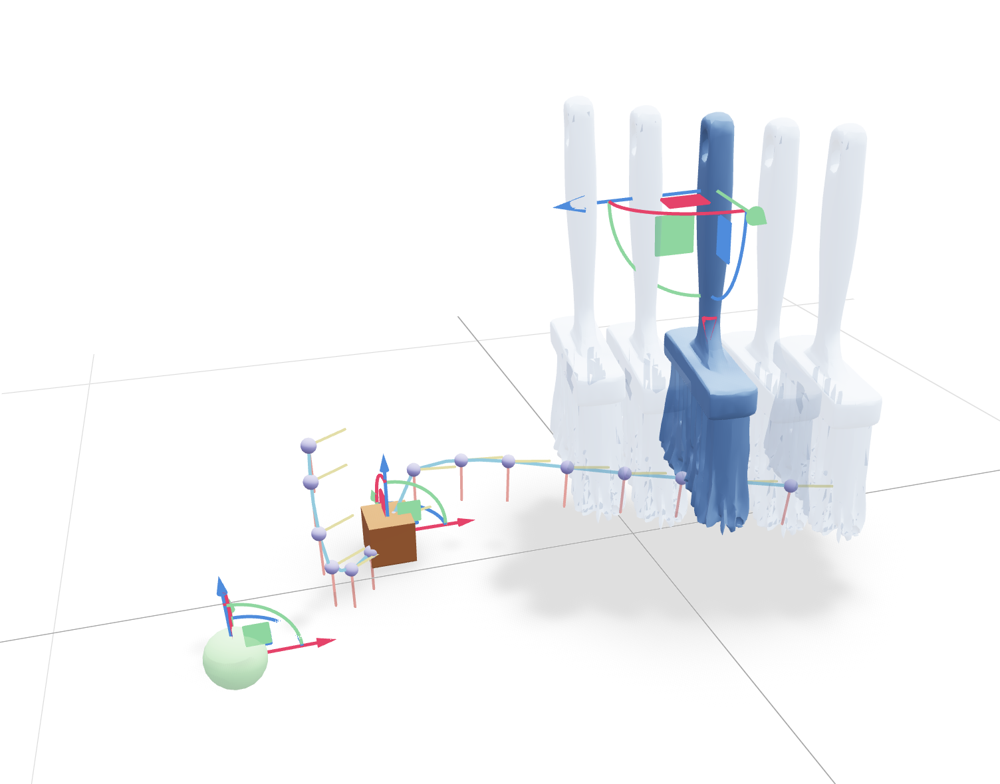

We present a reactive tool-surface-conditioned Language-Action model for dexterous tool manipulation that predicts short-horizon tool trajectories from a natural-language instruction and the current state of the tool and the object it acts on. We demonstrate the approach on brush sweeping and nail hammering: two behaviors whose useful tool surfaces—the brush bristles and the hammer face—differ substantially. We train it on procedurally generated demonstrations in which the planner repeatedly observes the scene, predicts the next stretch of motion, and lets the object move before observing again, so the policy learns to react as the scene changes. We then refine the pretrained policy in simulation with group relative policy optimization (GRPO). Trajectories are expressed in a contact frame anchored to the tool's functional surface, so the policy is not keyed to a hard-coded tool identity but grounded by the functional surface that should contact the world. The predicted poses are handed to the SimToolReal controller, which executes them on a 22-DoF Sharpa five-fingered hand mounted on a 7-DoF KUKA iiwa 14 arm.
The policy represents a tool trajectory as a sequence of contact-frame waypoints. Each of the \(K{=}15\) waypoints is a 9-vector: a contact point on the tool's functional surface, the outward contact normal, and an in-plane direction that fixes the surface orientation (for example, the direction a brush sweeps or the orientation of a hammer face). A right-handed triad and a fixed tool-specific transform turn each waypoint into a 6-DoF tool goal pose. Because the policy reasons about where the working surface should meet the world—rather than about a hard-coded tool identity—the same contact-frame policy form can support tools with different functional surfaces.
Manipulation runs as a closed loop: observe the current tool and object state → predict a short-horizon 15-waypoint trajectory → execute only the beginning of it → reobserve and replan. This mirrors how people use tools—sweeping crumbs that scatter or hammering a nail that sinks incrementally—so the policy reacts as the scene evolves instead of committing to one static goal.

Hammer: the contact frame sits on the striking face, where the tool meets the nail.

Brush: a predicted sweep, traced out as a sequence of contact-frame waypoints along the bristle surface.
The same contact-frame policy form is demonstrated on brush sweeping and nail hammering.
Push loose debris across the table and into a receptacle.
Strike a nail head repeatedly until it reaches a target depth.
The contact-frame representation is designed to extend to new functional surfaces; flipping and pouring are future extensions rather than demonstrated results here.
Sweeping with a brush.
Hammering a nail.
Stage 1 — Procedural reactive demonstrations. Analytic expert planners generate reactive tool-use demonstrations. Each scene is rolled out as a closed loop: at every step the expert plans a 15-waypoint trajectory, executes the first few waypoints, and lets the scene update before planning again. Between steps the scene is perturbed—jitter or knock the object, scatter debris, or land a weak hammer hit—so the expert must recover and the data teaches the policy to react rather than follow a fixed script. The demonstrated training and deployment focus on brush sweeping and nail hammering, with diverse templated natural-language instructions to encourage generalization across phrasing.
Stage 2 — Joint pretraining and GRPO refinement. A single state-conditioned Language-Action transformer (hidden size 512, 4 layers, 8 heads) is pretrained on reactive contact-frame trajectories with conditional flow matching, then refined in simulation with group relative policy optimization (GRPO). GRPO samples several trajectories per scene, executes each in closed-loop simulation, normalizes advantages within the group, and updates with a clipped surrogate that keeps the policy close to the pretrained model.
At deployment a single closed-loop controller handles brush sweeping and nail hammering. Tool and object poses are estimated with FoundationPose—the same estimator SimToolReal uses—so perception integrates cleanly across the two systems. The estimated poses, together with the instruction, form a compact symbolic 6D state (tool contact pose, object pose, destination, table). The state-conditioned Language-Action flow model predicts 15 contact-frame waypoints, which are converted to tool goal poses and handed to the SimToolReal controller for execution on the 22-DoF Sharpa hand and 7-DoF KUKA iiwa 14 arm. The controller executes only the beginning of the plan, then the system reobserves and replans—closing the loop back to FoundationPose.
Sweeping with the blue brush
Sweeping with the red brush
Hammering a nail
Using the blue brush to sweep
Failure — hammer pose tracking error. A FoundationPose tracking error propagates end-to-end: once the estimated pose drifts, the predicted goals no longer match reality.
The paper documents several limitations:
Proposed fixes. We expect these behaviors to respond to more aggressive domain randomization during training and a penalty for extra steps in simulation (discouraging redundant motions and a fixed orientation), alongside orientation-aware training, image conditioning, and larger-scale reinforcement learning. At deployment we currently mitigate these discontinuities by aligning each new plan's orientation to the previous one.
What a single tool-surface-conditioned Language-Action policy can do across demonstrated tool behaviors.
The policy predicts a short-horizon contact-frame trajectory, executes the start of it, then reobserves and replans—adapting as debris scatters or a nail sinks.
Sweeping and hammering run end-to-end on a 22-DoF Sharpa hand mounted on a 7-DoF KUKA iiwa 14 arm, driven only by FoundationPose state and language. See the rollout gallery.
Handed the predicted contact-frame waypoints, the SimToolReal controller tracks the intended tool poses with near-perfect fidelity (≈ 0.99), so high-level plans translate cleanly into hand motion.
A single compact transformer is conditioned by the functional tool surface/contact frame, allowing the same policy form to cover brush sweeping and hammer nailing without a hard-coded tool identity.
This is a research prototype: brush sweeping and hammering are the demonstrated behaviors today, while spatula flipping and spoon pouring remain future extensions.